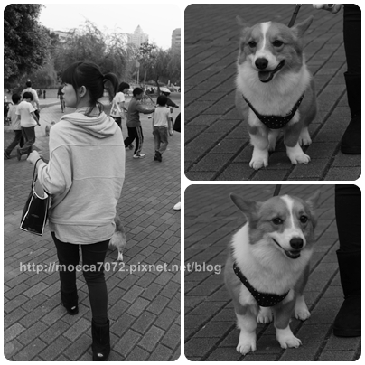
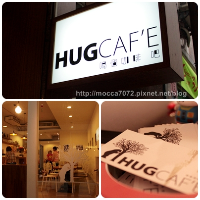
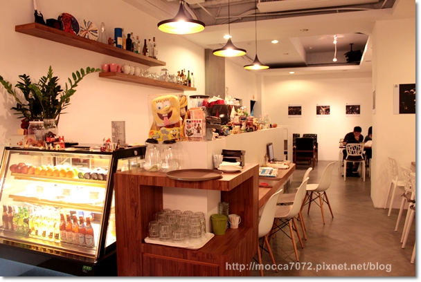
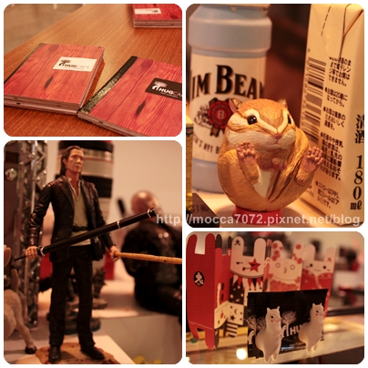
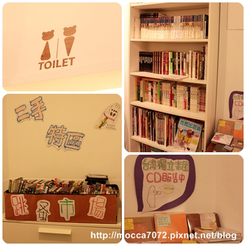
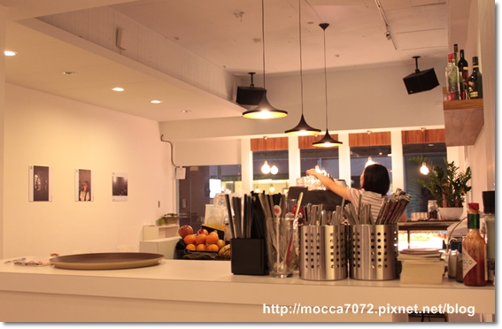
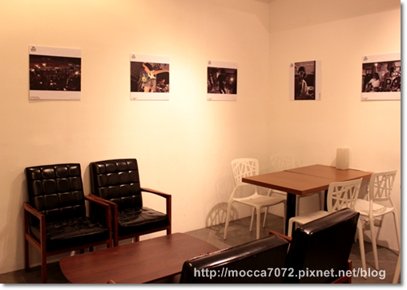
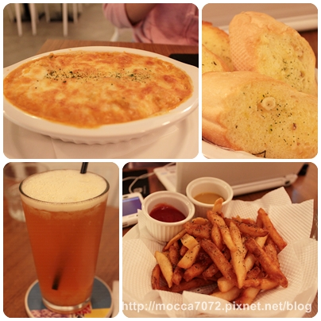
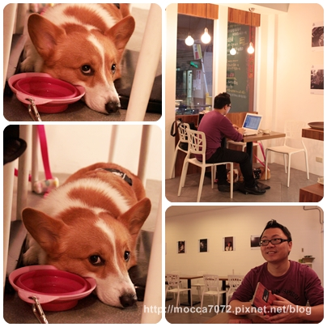
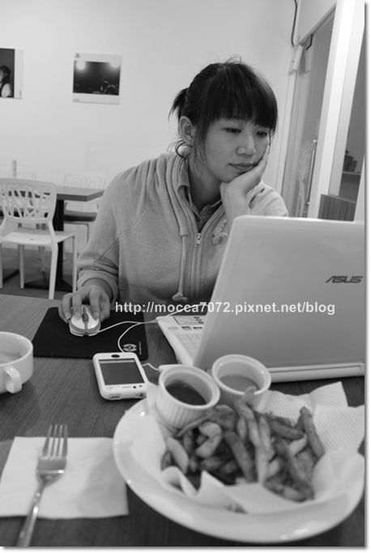

帶卡卡健檢完的隔天心情不好，想找個地方坐坐發呆！
就去了洛基歐弟家推薦的『HUG CAFE' 喝個咖啡』
我們很少到中永和一帶，因為猛哥覺得那裡很容易塞車不太去！
附近就是四號公園，第一次去，為之震驚啊！現在的公園人都那嘛多嗎？
完全不敢放開卡卡自己走，怕小孩會嚇哭，更怕有蛋蛋的來搭訕？
當天遇到隻有蛋的柯基慢慢接近，我俗辣就先牽著卡卡閃邊......

牽著卡嚕比晃了一圈就閃人了.....而且那裡便便好多，公德心啊！！
HUG CAF'E地點不難找，一進巷口立刻就看到可愛招牌
我們去之前已經有打過電話知會一下店家會帶狗狗！

店裡擺設很舒適，而且明亮很好拍，當然最重要的是可以帶狗狗一起用餐
這裡的感覺跟我們家的灶咖-->WOW CAFE'挺像的！哈哈哈

也是一大堆有的沒的可愛擺設，我最愛玩這些哩哩扣扣的東西！XD
左下是追殺比爾，右上那隻花粟鼠好Q～草泥馬當然不可缺席

店內書還真不少，沒帶筆電也不用怕無聊，可以看書打發時間！

店內雖然不大，但一點不會覺得有壓迫感！

設計師椅子好像這種性質的店都有，WOW也有放一樣的，哈哈哈！
牆上掛許多攝影作品，以後我家也要醬，牆上都是卡卡的寫真照！

我的餐點是泰式咖哩雞焗飯，超好吃的！重口味而且有點辣度，大推！
猛哥說不餓還是點了薯條跟香蒜麵包！兩樣都很好吃！

卡卡呢！就是超級乖趴在下面陪拔拔麻麻渡週末~
有一個醬帶的出門的小孩真好！不吵不鬧不影響別人

店內有提供WIFI，我們帶了筆電就醬在那坐了一下午，還生出一篇文！哈哈
寫文就是要在這種悠閒舒適的空間嘛！.gif") (明明就是懶人一枚 XD)
(明明就是懶人一枚 XD)

一個對狗狗友善的餐廳需要大家共同維持，帶狗狗用餐的主人請注意基本的禮貌哦！
小男生（公狗）記得進室內可以自備禮貌帶，除非你很肯定他不會尿尿！
咖啡‧輕食‧甜點‧展覽‧表演‧包場
新北市中和區永貞路282巷2號(捷運永安市場站步行５分鐘)
電話：02-2929-1665
營業時間：平日1100~2300‧
假日0900~2300
週二公休
提供免費無限上網/可帶寵物